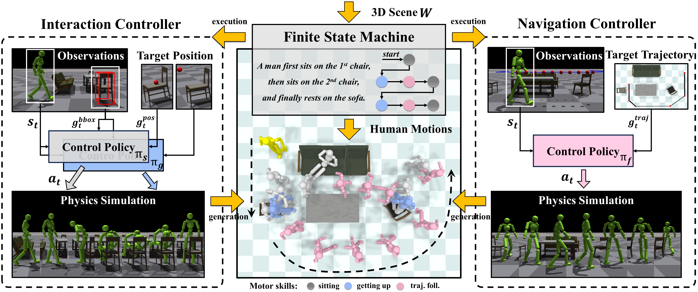

Synthesizing physically plausible human motions in 3D scenes is a challenging problem. Kinematics-based methods cannot avoid inherent artifacts (e.g., penetration and foot skating) due to the lack of physical constraints. Meanwhile, existing physics-based methods cannot generalize to multi-object scenarios since the policy trained with reinforcement learning has limited modeling capacity. In this work, we present a framework that enables physically simulated characters to perform long-term interaction tasks in diverse, cluttered, and unseen scenes. The key idea is to decompose human-scene interactions into two fundamental processes, Interacting and Navigating, which motivates us to construct two reusable Controller, i.e., InterCon and NavCon. Specifically, InterCon contains two complementary policies that enable characters to enter and leave the interacting state (e.g., sitting on a chair and getting up). To generate interaction with objects at different places, we further design NavCon, a trajectory following policy, to keep characters' locomotion in the free space of 3D scenes. Benefiting from the divide and conquer strategy, we can train the policies in simple environments and generalize to complex multi-object scenes. Experimental results demonstrate that our framework can synthesize physically plausible long-term human motions in complex 3D scenes.
|
Existing physics-based frameworks cannot generalize to multi-object scenarios
due to the lack of two important abilities: |
Pipeline
|  |
|
The interaction controller consists of two separate control policies, which provide two interaction-involved skills, i.e., sitting and getting up. The navigation controller employs a trajectory following policy that controls the character's movements along a specific path. Then, two reusable controllers are combined to synthesize human motions in complex 3D scenes without additional training. This is achieved by using a finite state machine that receives user instructions to enable the simulated character to perform long-term interaction tasks. |
Synthesized Results in Diverse 3D Scenes
|
|
|
|
|
|
|
|
|
|
|
|
Scalability of Our Framework

|
|
|
| By training an additional interaction controller, our framework can be extended to new action (e.g., lying down), which enables physically simulated characters to interaction with objects more diversely. |
Citation
@misc{pan2023synthesizing,
title={Synthesizing Physically Plausible Human Motions in 3D Scenes},
author={Liang Pan and Jingbo Wang and Buzhen Huang and Junyu Zhang and Haofan Wang and Xu Tang and Yangang Wang},
year={2023},
eprint={2308.09036},
archivePrefix={arXiv},
primaryClass={cs.CV}
}
Related Projects
- [1] Learning to Sit: Synthesizing Human-Chair Interactions via Hierarchical Control, AAAI 2021.
- [2] InterPhys: Synthesizing Physical Character-Scene Interactions, SIGGRAPH 2023.
- [3] AMP: Adversarial Motion Priors for Stylized Physics-Based Character Control, SIGGRAPH 2021.
- [4] Trace and Pace: Controllable Pedestrian Animation via Guided Trajectory Diffusion, CVPR 2023.